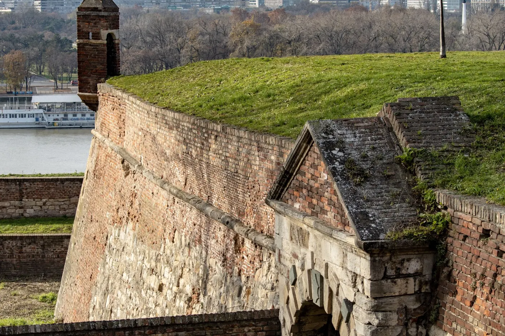
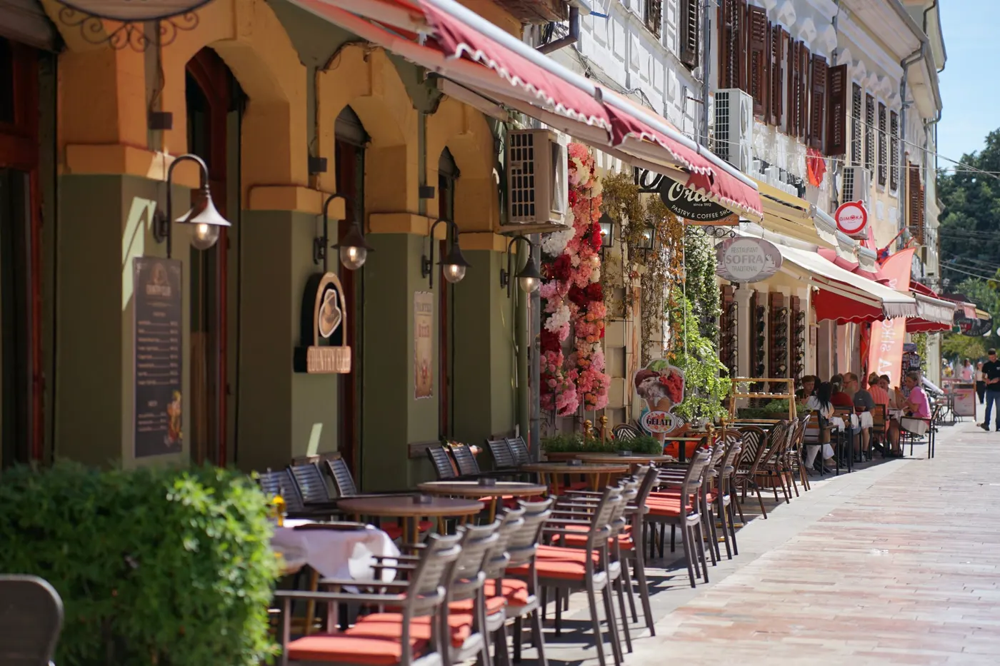

Vodiči / Beograd
Beograd — kad ići, aerodrom, šta obavezno vidi

Ovaj vodič je pisan za goste koji prvi put dolaze u Beograd — bilo da si stranac na putu, ili domaćin koji sprema listu preporuka za prijatelja koji dolazi u posetu.
Kad doći u Beograd — najbolje vreme za grad
Proleće (april-jun) i rana jesen (septembar-oktobar) su najprijatniji za duge šetnje kroz centar i Kalemegdan. Leto je toplo i vrlo živo — grad tada ima najviše otvorenih terasa, festivala i splavova uz reku, ali i najviše turista i vrućine. Zima je tiša, sa jakom kafanskom i noćnom scenom u zatvorenom, dobra prilika za onoga ko dolazi zbog izlazaka pre nego zbog šetnje po gradu.
Aerodrom Beograda i put do centra grada
Aerodrom Nikola Tesla je u Surčinu, oko 18 km od centra. Ekspresna minibus linija A1 vozi direktno do Trga Slavija za oko 35 minuta i košta 400 dinara (plaća se gotovinom u autobusu). Gradska linija 72 je besplatna — kao i ostatak beogradskog GSP prevoza (autobusi, tramvaji, trolejbusi) — ali sporija, oko 40–45 minuta do Zelenog venca, sa više usputnih stanica kroz Novi Beograd. Taksi sa zvaničnog šaltera na aerodromu ima fiksnu cenu po zonama, obično 2.300–3.000 dinara (20–25€) do centralnih opština; aplikacije poput CarGo ili Yandex Go su često jeftinija alternativa.
Koliko košta izlazak u Beogradu — orijentacione cene
- Kalemegdanska tvrđava i park — ulaz je besplatan; pojedini manji muzeji unutar tvrđave (npr. Vojni muzej) naplaćuju simboličnu ulaznicu.
- Ćevapi ili roštilj — 600–900 dinara (5–8€) po osobi u običnoj kafani ili roštiljnici.
- Večera u Skadarliji uz live muziku — 1.500–2.500 dinara po osobi (13–22€), zavisno od lokala.
- Kafa — 250–350 dinara (2–3€) u centru grada.
Šta obavezno vidi u Beogradu za 2-3 dana
- Kalemegdanska tvrđava — najveća gradska znamenitost, sa pogledom na ušće Save u Dunav; najlepše je za zalazak sunca.
- Knez Mihailova ulica — glavna pešačka zona koja povezuje Kalemegdan sa Trgom Republike.
- Skadarlija — stara boemska četvrt sa kaldrmom, kafanama i muzikom uživo.
- Hram Svetog Save — jedna od najvećih pravoslavnih crkava na svetu, upečatljiva iznutra i spolja.
- Zemun — stariji deo grada uz Dunav, sa Gardoš tornjem i mirnijom atmosferom od centra.

Gde jesti u Beogradu — lokalna kuhinja
Osnova beogradske kafanske trpeze su ćevapi, pljeskavica i mešano meso sa roštilja, uz ajvar i kajmak kao obavezne priloge. Za tradicionalniji doživljaj probaj sarmu ili karađorđevu šniclu, uz čašu domaće rakije pre jela. Skadarlija je najatmosferičnija za večeru uz muziku uživo, ali i skuplja — za svakodnevnu, jeftiniju kafansku hranu bolje se udaljiti par ulica od turističke zone.
Skrivena mesta u Beogradu van glavnih ruta
- Savamala — nekadašnja industrijska četvrt uz reku, danas centar street art murala, klubova i kreativnih prostora.
- Splavovi na Savi i Dunavu — plutajući klubovi i restorani na reci, posebno živi tokom leta.
- Kosančićev venac — mirna stara četvrt sa vidikovcem na ušće reka, retko na turističkim rutama.
- Ada Ciganlija — rečno ostrvo sa jezerom, plažama i stazama za šetnju, omiljeno mesto lokalaca leti.
Praktični saveti pre puta
- Dokumenta — Srbija nije u EU niti u Šengenu; proveri vizne uslove za svoje državljanstvo pre puta (mnoge zemlje imaju bezvizni režim).
- Valuta — srpski dinar (RSD); kartice se prihvataju u većini restorana i prodavnica, ali kafane i pijace često rade samo za gotovinu.
- Gradski prevoz — GSP autobusi, tramvaji i trolejbusi su besplatni za sve putnike; jedini izuzetak je ekspresna aerodromska linija A1.
- Noćni izlazak — kao i u svakom velikom gradu, čuvaj lične stvari u gužvi oko splavova i u centru vikendom uveče.